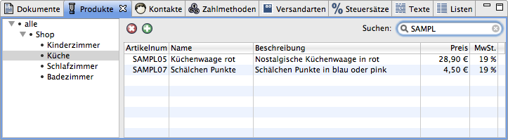

Das Übersichtsfenster stellt alle Datensätze tabellarisch dar.
Alle Datensätze können in eine Kategorie eingeordnet werden. Am linken Rand des Übersichtsfenster erscheint ein Baum mit allen verwendeten Kategorien. Wird das Element alle ausgewählt, werden alle Datensätze angezeigt. Ist ein Kategorieelement angewählt, erscheinen nur diejenigen Datensätze, die in die gleiche Kategorie eingeordnet wurden.
Der Kategoriebaum für Dokumente unterscheidet sich etwas von dem für andere Datensätze. Dokumente werden je nach Art des Dokumentes automatisch in Kategorien sortiert.
Fährt man mit der Maus über den Eintrag "unbezahlte Rechnungen", wird die Summe aller unbezahlten Rechnungen angezeigt.
Wird dieses Element ausgewählt, werden diejenigen Dokumente angezeigt, die dem gleichen Vorgang zugeordnet werden können.
Wird dieses Element ausgewählt, werden diejenigen Dokumente angezeigt, die dem gleichen Kontakt (Kunde/Lieferant) zugeordnet werden können.

Über diesen Knopf oder über das Kontextmenü (rechte Maustaste) oder mit der Taste Entf kann der ausgewählte Datensatz gelöscht werden.

Über diesen Knopf oder über das Kontextmenü (rechte Maustaste) kann ein neuer Datensatz hinzugefügt werden.
Die Menge der angezeigten Datensätzen lässt sich einschränken. Wird in das Suchfeld eine Zeichenkette eingetragen, so werden nur diejenigen Datensätze angezeigt, die diese beinhalten. Je nach Art des Datensatzes werden unterschiedliche Spalten zur Suche verwendet. Die Spalte Name wird immer verwendet.
Ist das Suchfeld leer, werden alle angezeigt.
Die Datensätze sind tabellarisch dargestellt.

Durch Klicken auf die Kopfzeile der Tabelle lassen sich die Datensätze aufsteigend oder absteigend sortieren.
Die Tabelle für Dokumente enthält eine Spalte Status.
Rechnungen werden als bezahlt oder unbezahlt markiert.
Bestellungen werden als offen, in Bearbeitung oder versendet markiert.
Über das Kontextmenü (rechte Maustaste) kann der Status einer Bestellung geändert werden. Je nach Einstellung wird der Kunde per E-Mail über den neuen Status benachrichtigt.
Wurde ein Dokument bereits gedruckt, wird dies durch ein Druckersymbol angezeigt.
Sind Daten nachträglich nochmals geändert worden, erscheint das Symbol ausgegraut.
Siehe Kunde benachrichtigen